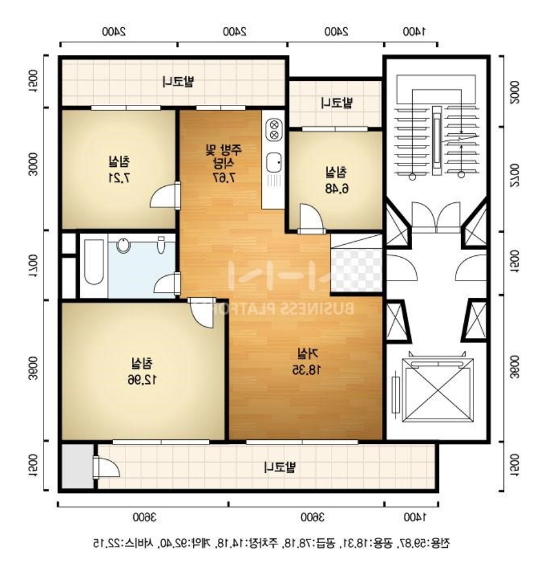
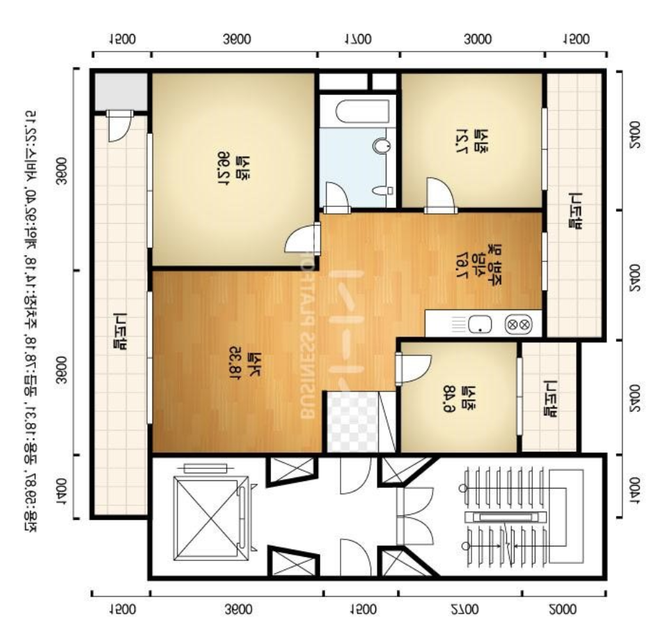

cli 로 이미지 수정을 할 수 있는 ImageMagick의 사용 사례
반전 시키기
필요
이사갈 집의 평면도 이미지를 구했는데, 내가 들어갈 동은 평면도 이미지와 방향이 일치하지 않았다. 이미지를 어떻게 뒤집어놓으면 내 머릿속에서 변환할 필요 없이 집 구조와 동일하게 매핑하는게 편할 것 같았다.
'거울반전' 같은 용어가 떠올랐지만, 내가 원하는 반전의 정의가 거울반전과 일치하는지는 잘 모르겠다. 아무튼 거울반전은 flip horiziontally 인듯한데, 용어를 찾다보니 내가 원하는 방향을 정확하게 뭐라고 부르는지 더욱 모르게되었다. 아무튼.
진행
사용할만한 옵션을 찾아보니 4가지 종류가 있어서 다 출력해보기로 함.
-flip # vertical
-flop # horizontal
-transpose # flip vertical + rotate 90deg
-transverse # flip horizontal + rotate 270deg
$ convert original.png -flip flip.png
$ convert original.png -flop flop.png
$ convert original.png -transpose transpose.png
$ convert original.png -transverse transverse.png
1. original
2. flip
3. flop

4. transpose
5. transverse

결과
transverse가 내가 원하는 옵션이었다. 사실 옵션 목록 보고, 대충 찍어서 transverse로 맨먼저 이미지를 뽑아보았는데, 나머지 옵션들로 돌리면 어떻게 될지 궁금해서 다 찍어보게 되었다.
ref.
- https://devhints.io/imagemagick
- https://imagemagick.org/script/convert.php
- http://www.georeference.org/doc/transform_flip_horizontally_flip_vertically.htm
- http://gluebyte.tumblr.com/post/61312905319
- https://terms.naver.com/entry.nhn?docId=3568793&cid=58941&categoryId=58960